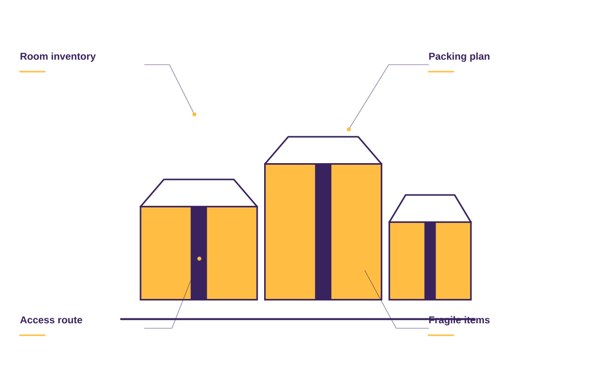
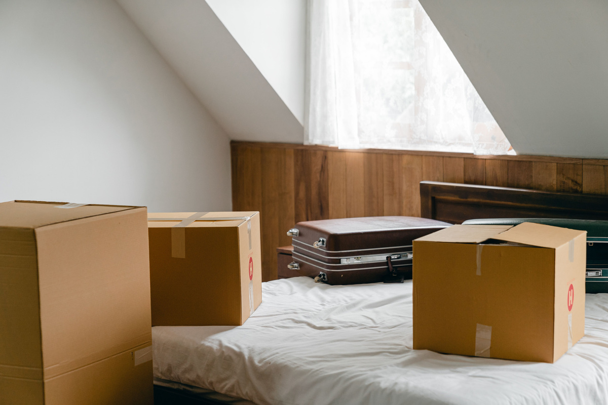
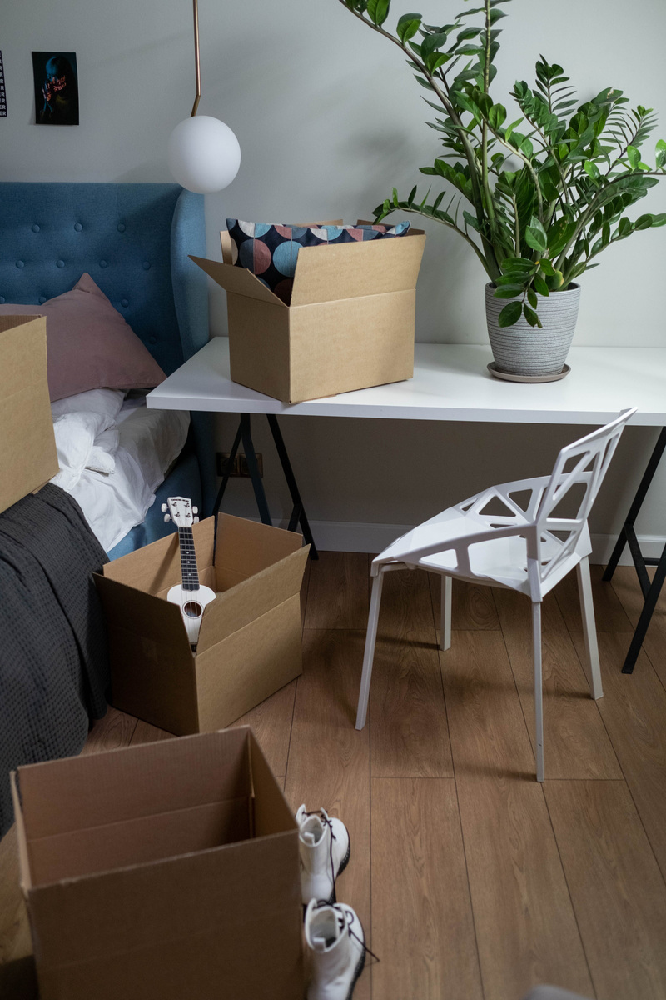

Local moves
A home-to-home move with the practical details discussed up front.
A moving plan around your home, your belongings, and the day everything changes.
Plan your move ↗A home-to-home move with the practical details discussed up front.
Thoughtful help for the rooms and belongings you want packed.
Extra hands for the heavy part of moving day.
Discuss the furniture, rooms, or single items you need moved.
A good move begins with a clear picture of both ends of the journey. Rooms, belongings, access, packing, and timing should all be on the same page.

NORTHSTAR MOVING / THE DETAILS MATTERShare the furniture, boxes, and unusual items you want included in the move.
Stairs, elevators, parking, and loading access shape the practical moving-day plan.
Discuss full packing, selected rooms, loading only, or a home-to-home move.
The addresses, the access, the furniture, and the things you’re most concerned about. A clear plan starts with the details of your move.


Start with the property, your priorities, and the details you want us to understand.
Talk through suitable options, practical access, and the work you want included.
Review the proposed scope and ask questions before deciding on the next step.
When you get in touch, a little context goes a long way. These are the details that help us start a useful conversation about your local moving project.
Tell us what you have in mind ↗Tell us about origin and destination so the conversation starts with your situation.
A few details about rooms and belongings help us understand what you need.
Share stairs and parking when you get in touch, including photos where useful.
Let us know about packing and timing so the proposed scope reflects your priorities.
Tell us what needs to move, the addresses, and the access at each end. We can discuss a suitable scope.
Share those details early, including elevators, long walks, and parking access, so the plan reflects your moving day.
Yes. Let us know which rooms or belongings you want help with and what you plan to pack yourself.
A moving plan around your home, your belongings, and the day everything changes.